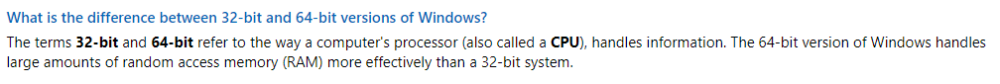
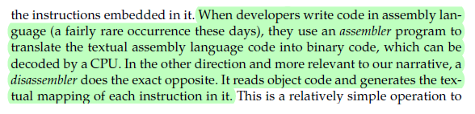
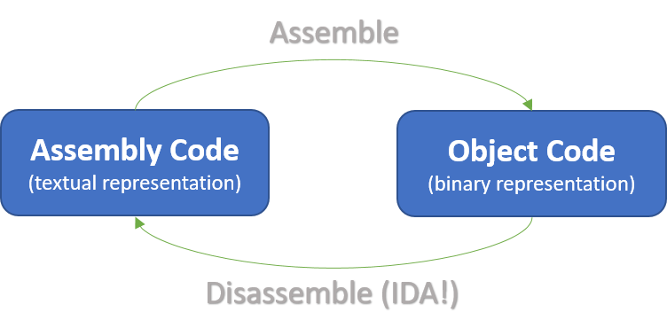
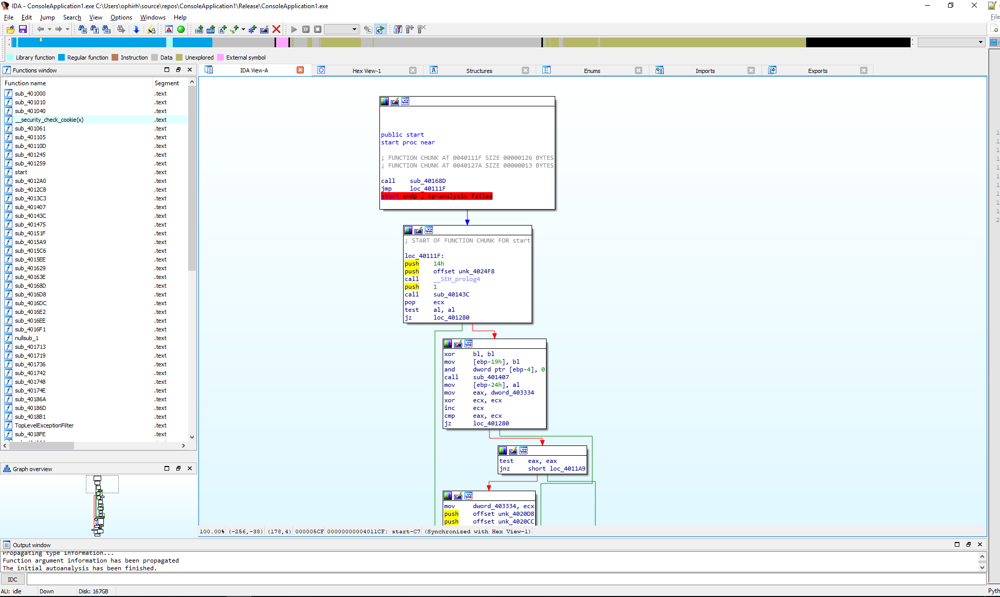

[Reverse Engineering Workshop] Prep #3 - Last Prep!
Hi there!
This is our last preparation task before the workshop, we are looking forward to it and we hope you are too!
We would like to minimize to 0 the time spent on environment setup during the workshop itself. Therefore, this assignment will mainly help you get everything up and running before the workshop starts.
Knowing the basics of C will help you a lot with the workshop exercises. For this reason, the third part of this preparation is a C recap: a list of necessary topics and references for each topic. This part is mandatory for those who never studied C, and optional for those who did. Don’t worry, even if you've never written any C code - this recap will provide you all the information you need for the workshop (and perhaps even more, but knowledge is power ;)).
Our last preparation assignment will address the following:
-
32-bit vs. 64-bit systems
-
IDA installation (disassembler & debugger)
-
C recap (optional)
-
Your first step into RE
Time estimation: 75 / 45 minutes with / without the C part, respectively.
32-bit vs. 64-bit Systems
Read the following excerpt from Microsoft’s MSDN:

Our workshop exercises were compiled as 32-bit applications. On a 32-bit operating system, the CPU uses 32-bits long addresses to access the memory. Therefore, the addresses we will see during the workshop will look something like 0x0040598A - a hexadecimal number, where every two digits form a single byte (2 digits = 1 byte, 8 digits = 4 bytes).
For more elaboration on this topic, we recommend reading the following post (not a must).
IDA installation
IDA is probably the most popular disassembler among reverse-engineers. Recall what a disassembler is:

Or if you prefer graphics:

Anyway, go ahead and download your first disassembler.
Important: We did not test the workshop with a Unix-based IDA. Please keep in mind that we highly recommend using Windows in this workshop. If you work on another system, please have a Windows virtual-machine or consider borrowing a friend’s computer.
Awesome! Try opening the program and make sure it runs properly (i.e. it is asking you whether to open a project (“Go”) or work on your own (“New”).
This was easy, now wasn’t it?
C Recap
Please go through the following topics, and read the attached material for each topic:
-
Strings in C: go over the following (super short) tutorial
-
Pointers in C: read the sections What are Pointers, How to use Pointers and NULL Pointers in this tutorial.
-
C command-line arguments: read this tutorial.
-
Memory Management: read the following text.
While programming, if you know the size of an array, you can define it easily. For example, to store a name of any person (let’s say a name can go up to a maximum of 100 characters), you can define something as follows −
char name[100];But now let us consider a situation where you have no idea about the length of the text you need to store, for example, you want to store the contents of some file of unknown size. Here we need to define a pointer to a character array without defining how much memory is required. Later, based on the requirement, we can allocate memory. The function which allocates memory is named malloc and it receives the number of bytes to allocate on the heap −
int length; // declare an integer
char* string; // declare a pointer to a character
scanf("%d", &length); // receive length from user in run-time and store it in "length"
string = (char*)malloc(length); // allocate memory dynamically on the heap
if (string) printf("malloc succeeded\n"); // check for errorsNote that every piece of allocated memory should be freed when not used anymore. Otherwise, the memory on the heap, a finite resource, might run out. The function is named free and it receives a pointer to the allocated memory space −
free(string);Your first step in RE
The input to IDA is an executable file - anything which is supposed to run on a CPU: just drag-and-drop (not right now, we’ll do this in a minute) an .exe file into IDA and it will be disassembled.
Depending on the compiler / IDA version used, IDA may or may not correctly identify the main function. Sometimes, we will open an executable file with IDA and the main function will appear immediately, and sometimes we will have to search for it.
How do we find the main function?
Well, different compilers generate different code and will also call main() in different ways. We will focus on one way (among many) to locate main() which is relevant specifically to the programs compiled for the workshop.
Let’s think about what defines a function: its name, its return value and its parameters. However, function names are not always available in IDA (it depends on several things like whether the function is imported from a library, or if a symbol file is present, etc.), and the type of return value is also unknown - a function’s return value will always be seen as a number stored in EAX.
Our last chance is the function’s parameters: before calling a function with X arguments, we expect to see X separate push instructions (one for every argument) and then a call instruction with the function address. We can also expect IDA to identify Windows runtime functions that are responsible for loading the program and calling its main function - these functions may help us locate main() as well.
Let’s try to put this to the test with the executable provided here:
-
Download this archive file to your computer and extract it (password is CLEAN).
-
Run it using the command line (“cmd”):
-
Click on winkey + r.
-
Type in “cmd” and hit Enter.
-
Drag-and-drop the file to the cmd window and hit Enter to run it.
-
What does this program do?
-
Okay that was easy. Now close cmd.
-
-
Start IDA, click on "OK" and then click on “Go”.
-
Drag-and-drop the executable file to the IDA window.
-
Click on OK.
IDA will take a second to disassemble the file. By the end of the process, you will hopefully see something like this:

Every block in IDA consists of assembly instructions.
Our mission is now to find the actual code - not the one responsible for “wrapping” the program, but the code which was originally written by the program's author. Before we start, memorize the following motto:
Double-click to enter, Esc to go back.
These really are the most common keyboard operations you’ll use in IDA. Now let’s find main.
-
Find a call instruction somewhere in the code.
-
Once you find one, click on it (once) such that all call instructions are highlighted.
-
Double-click on 2-3 function-addresses which follow the call (sub_xxxxxx) to enter the called functions, then Esc to exit them.
-
Find a call to sub_401040. Double-click on it. Anything looks familiar in the function's code?
What could have helped you understand (before entering this function) that this call instruction is more interesting than the rest?
Quick Check
1. Figure out whether your computer is running a 32-bit or a 64-bit version of Windows.
2. What does the following code print? If you have no idea what these percent-signs stand for, take a look here.
int num = 2;
int *ptr = #
char c = 'b';
char *ptr2 = &c;
char mid[] = "|| !";
printf("%d %c %s %d %c", *ptr, c, mid, num, *ptr2);Show answer
"2 b || ! 2 b" — the great words of Shakespeare :)
This is it then!
See you in the workshop :)